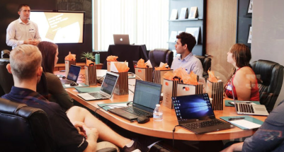

Boise State opens an electronic conference room to help put more byte in meetings
Idaho Statesman March 18, 1994
Boise State University has opened a room on campus where computers are used to speed up and increase the efficiency of meetings.
The electronic meeting room is for businesses, government agencies, civic groups and whoever else can benefit from it.
Electronic meeting rooms are still a relatively new phenomenon. An estimated 300 are in use in the United States.
Twenty desks, each with an HP computer, sit in two horseshoe-shaped arrangements, one inside the other.
During meetings, participants type in their ideas and comments. The information is then collated and displayed on each computer monitor and a large projection screen at the front of the room. Using the software, participants can then rate and prioritize the information.
Funding for the room remodel came from John Elorriaga. The computing equipment support came from Hewlett-Packard.